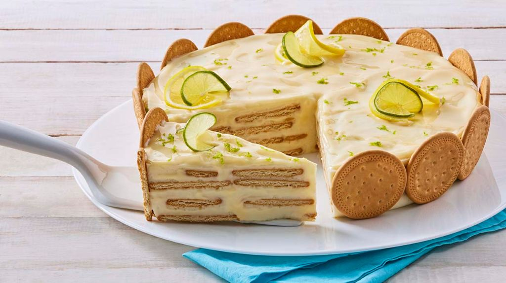

En un recipiente coloca las galletas Marías con la barra de mantequilla y mezcla hasta formar una pasta suave. Colócala en tu molde para pay y espárcela con tus dedos hasta que el fondo y bordes de este queden completamente cubiertos.
En el mismo recipiente donde creaste la base (puede ser otro si así lo prefieres), coloca el queso crema, los huevos, la lechera, la vainilla y la crema y con la batidora mezcla hasta que todo se integre.
Vacía sobre la base de galleta y coloca el recipiente en el horno a 180º por 45 minutos, aproximadamente. Una vez transcurrido el tiempo retira del horno, espera a que se enfríe un poco y sirve.
GELATINA DE MOSAICO
Ingredientes
1 Paquete de Gelatina sabor a uva (25 g)
1 Paquete de Gelatina sabor a fresa (25 g)
1 Paquete de Gelatina sabor a limón (25 g)
1 Paquete de Gelatina sabor a piña (25 g)
1 Lata de Leche Condensada LA LECHERA®
1 Lata de Leche Evaporada CARNATION® CLAVEL® (1 1/2 tazas)
1 Lata de Media Crema NESTLÉ®
1 Cucharadita de Esencia de vainilla
4 Sobres de Grenetina (7 g c/u) hidratada en ½ taza de agua y disuelta a baño María
2 Fresas desinfectadas y cortadas a la mitad
1/2 Taza de Mango cortado en cubos
1 Limón cortado en rodajas
1 Ramita de Menta fresca desinfectada
Preparación
Prepara las gelatinas de sabor una por una con dos tazas menos de agua de lo que indica el empaque. Viértelas separadas en moldes rectangulares y refrigera hasta que cuajen. Córtalas en cubitos, combínalos y colócalos en un molde para gelatina engrasado.
Licúa la Leche Condensada LA LECHERA® con la Leche Evaporada CARNATION® CLAVEL®, la Media Crema NESTLÉ® y la esencia de vainilla; con la licuadora encendida agrega, poco a poco, la grenetina previamente disuelta.
Licúa la Leche Condensada LA LECHERA® con la Leche Evaporada CARNATION® CLAVEL®, la Media Crema NESTLÉ® y la esencia de vainilla; con la licuadora encendida agrega, poco a poco, la grenetina previamente disuelta.
Utiliza el sabor de gelatina de tu preferencia.
Agrégale fruta a tu gelatina para elevar tu consumo de fibra.
Tarta de Chocolate
Ingredientes
1 Taza de Leche Fresca
2 Cucharadas Vinagre Blanco
1/2 Taza Aceite Vegetal
1 Cucharadita Esencia de Vainilla
1/2 Taza Cocoa D'onofrio
1 Taza de Harina sin preparar
1 Cucharadita Bicarbonato de Sodio
3/4 Taza de Azúcar Rubia
2 Huevos
1 Tableta (100 g) de Nestlé®
Leche
1 Lata (393 g) de LECHE
CONDENSADA NESTLÉ®
1/3 Lata de IDEAL® CREMOSITA
1 Cucharada de Mantequilla Light
1/4 Taza de Arándanos
1/2 Taza de Fresas
1 Tableta (100 g) de Nestlé®
Preparación
Para la base, mezcla la mantequilla con las galletas hasta formar una pasta; colócala en un molde para tarta forrado con papel aluminio y refrigera durante 15 minutos.
Para la crema de chocolate, bate el queso crema con la bolsita de Leche Condensada LA LECHERA® hasta que estén incorporados, con la batidora encendida a velocidad baja agrega el chocolate previamente fundido y la grenetina previamente disuelta.
Vierte inmediatamente en el molde con la base de galleta, cubre con plástico antiadherente y refrigera por 2 horas. Desmolda la tarta y decora con fresas. Ofrece.
Puedes fundir el chocolate amargo picado en el horno de microondas en intervalos de 15 segundos y moviendo entre cada uno hasta que esté totalmente fundido.
CARLOTA
Ingredientes
1 Lata de Leche Condensada LA LECHERA
1 Lata de Leche Evaporada CARNATION CLAVEL
1/4 Taza de Jugo de limón colado
30 Galletas Marías
1 Limón cortado en rodajas
5 Galletas Marías troceadas
1 Rama de Menta desinfectada
1 Limón (su ralladura)
Preparación
Licúa: Licúa la Leche Condensada LA LECHERA® con la Leche Evaporada CARNATION® CLAVEL® y sin dejar de licuar, agrega poco a poco el jugo de limón.
Agrega: En un refractario cuadrado, coloca una capa de galletas, un poco de la mezcla de limón y repite hasta terminar con el resto de los ingredientes. Cubre con plástico adherente y refrigera por 1 hora o hasta que esté firme.
Decora: Decora con las rodajas de limón, las galletas troceadas, las hojas de menta y la ralladura de limón. Ofrece.
Consejo culinario: Puedes añadir algunos cubitos de mango o fresa entre cada capa.
Consejo nutricional: El limón aporta potasio.

Crepas de fresa con queso
Ingredientes
1 taza harina
1 pz huevo
1 cucharada de azucar
1 taza de leche
2 cucharadas de mantequilla derretida
1 taza queso crema
1/2 taza de azucar glass
1 pz de jugo de limón
1 pz ralladura de limón
fresas lavadas y desinfectadas
Preparación
Para las crepas; mezcla todos los ingredientes, la harina, el huevo, la leche, el azúcar y la mantequilla hasta obtener una masa homogénea.
Calienta en una sartén para crepas un poco de mantequilla, añade una porción de masa. Baja ligeramente la flama y ladea un poco la sartén para que la masa se extienda por toda la sartén, cuando empiecen a salir burbujas dale la vuelta y cocina por el otro lado. Repite la misma operación hasta acabar con la masa.
Para el relleno; mezcla con ayuda de la batidora el queso crema junto con el azúcar glass, el jugo y la ralladura de limón. Mezcla hasta que se integren perfectamente los ingredientes.
Para armar las crepas, coloca una capa de la mezcla de queso sobre cada crepa y encima añade las fresas en rodajas al gusto. Dobla en forma de triángulo.
Beso de angel
Ingredientes
3 tazas de harina
6 huevos divididos la clara con la yema
2 cucharaditas de vainilla
1 y 1/3 tazas de leche entera
1 y 1/3 tazas de azúcar
4 cucharaditas de polvo de hornear
Ingredientes para el flan
1 sobre la grenetina hidratada en 1/2 taza de agua
1 lata de leche condensada
1 lata de leche evaporada
1 barra de queso crema
5 huevos
2 cucharaditas de vainilla
Ingredientes para el jarabe
1 lata de leche condensada
1 lata de leche evaporada
1 taza de leche entera
1 cucharadita de vainilla
1/2 taza de leche sabor vainilla
Preparacion
Para preparar el bizcocho, cernir la harina 3 veces y en la última cernir con el polvo de hornear.Batir las claras a punto de nieve, agregar el azúcar poco a poco hasta integrar bien.
Agregar el azúcar poco a poco y las yemas una por una. Mezclar aparte la leche con la vainilla e ir agregando y alternando con la harina que dividiremos en tres partes, empezando con la harina lo haremos con movimientos envolventes con el batidor de mano hasta integrar bien.
Horneamos a 350ºC por 30 minutos. Para preparar el flan, lo haremos en el mismo molde que horneamos el bizcocho y lo cubriremos con papel aluminio que salga del molde para ayudarnos a desmoldar el flan después. Licuamos los ingredientes del flan y al final agregamos la grenetina hidratada y lo llevamos al horno por 40 minutos.
Cuando lo movamos y el flan se sienta firme ya está listo. Llévalo a la nevera. Licuamos la mezcla para el jarabe, bañamos el bizcocho muy bien y lo dejamos reposar en la nevera de preferencia toda la noche para que absorba mejor las leche.
Para armar el pastel yo le puse un poco de crema batida en la primera capa de pan, para ayudar a pegar el flan coloque con cuidado el flan y agregue más crema batida antes de poner la otra capa de pan.
No tienes los utensilios necesarios para realizar postres...CONSIGUELOS AQUI!!